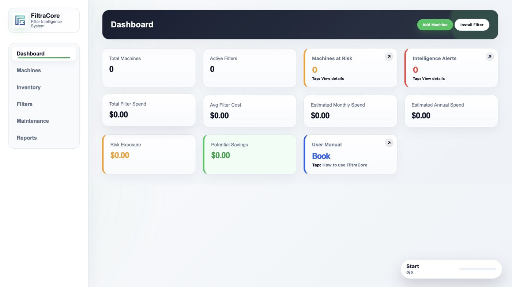
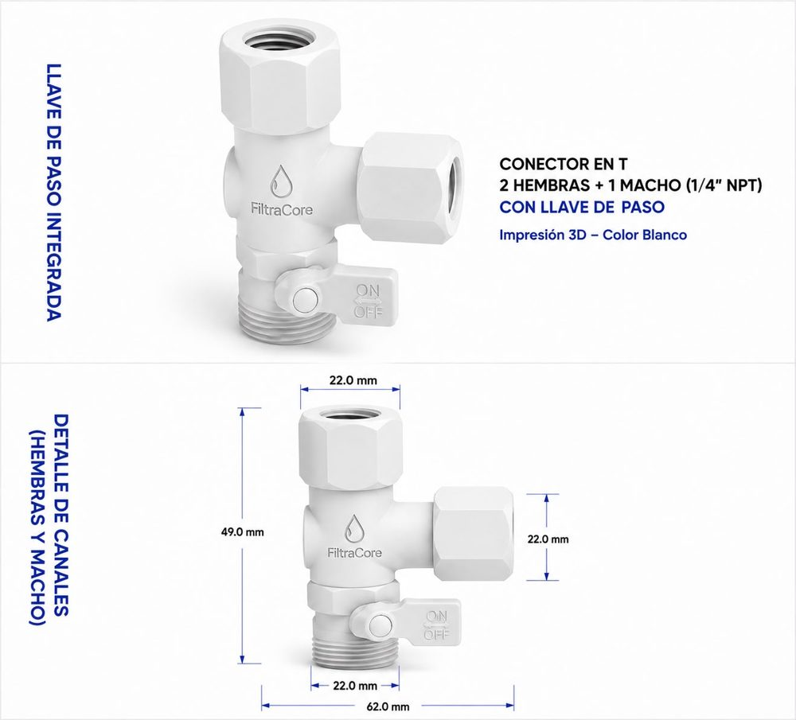
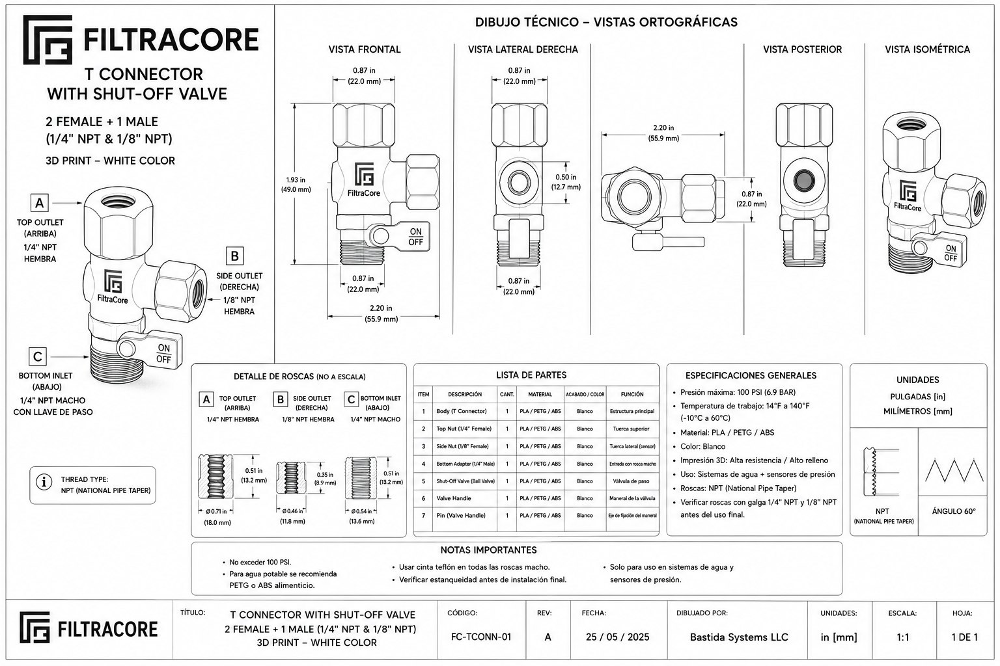
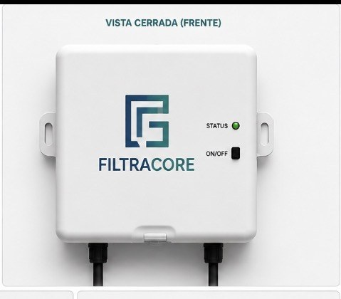
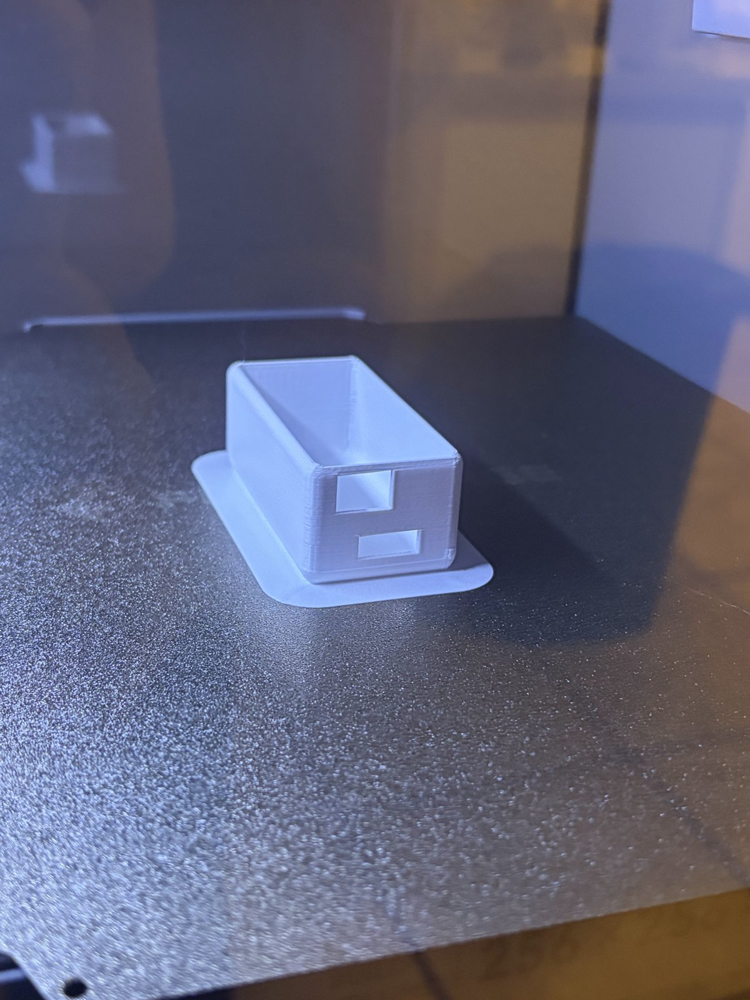
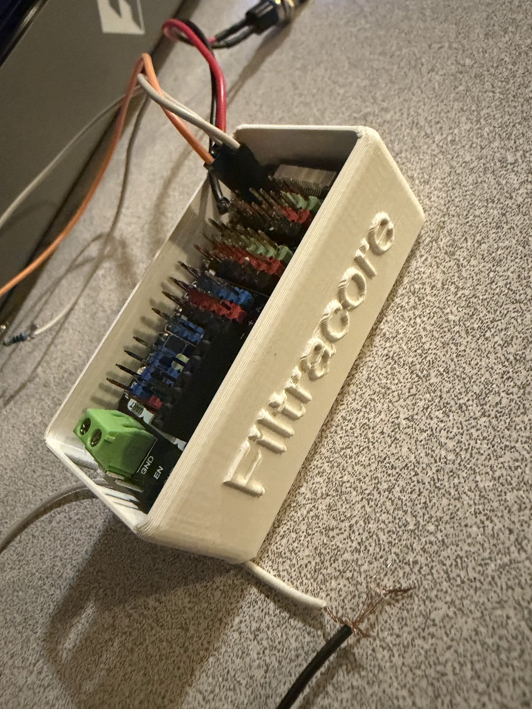
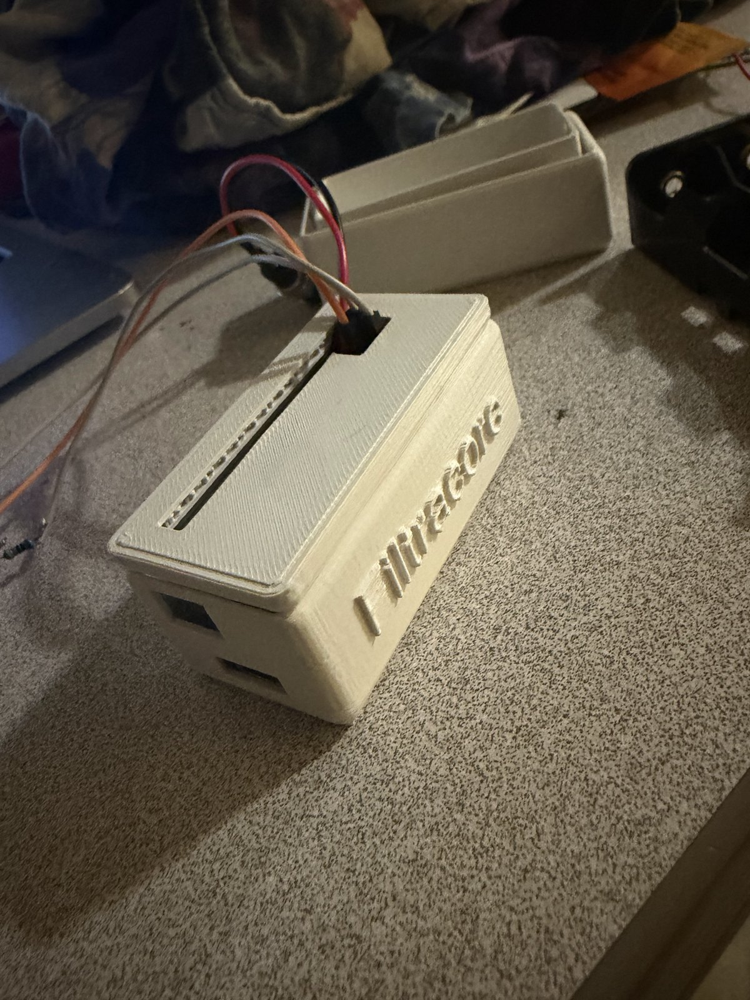
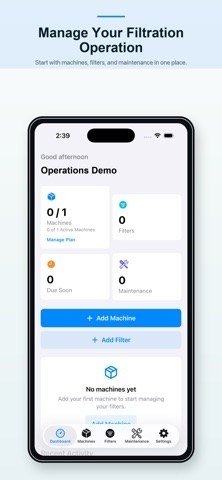
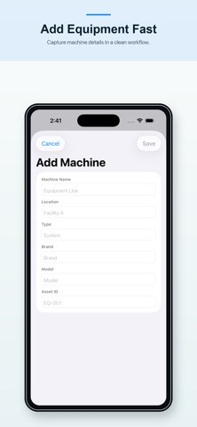
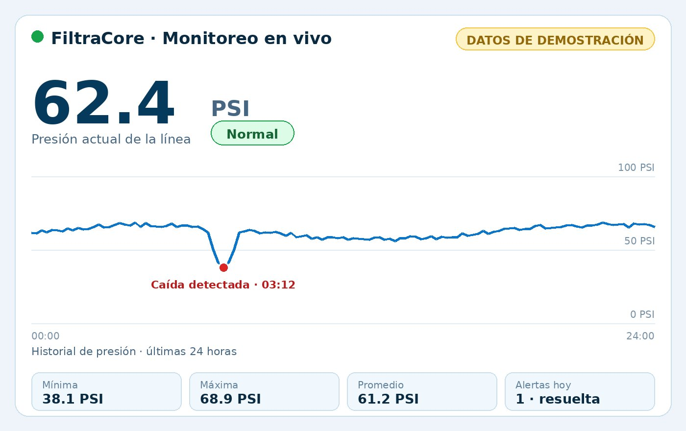

Fugas invisibles
Una tubería que gotea dentro de una pared puede pasar meses sin verse.
Monitoreo de presión de agua
FiltraCore vigila la presión de tu línea de agua las 24 horas. Cuando detecta una fuga o un cambio anormal, te avisa en la app al momento — estés donde estés.

El problema
La mayoría de las fugas se descubren cuando ya dañaron pisos, muebles o la estructura — y después de semanas pagando agua que nadie usó.
Una tubería que gotea dentro de una pared puede pasar meses sin verse.
Las caídas y los golpes de presión dañan tuberías, llaves y electrodomésticos.
Sin monitoreo, el primer aviso de una fuga es el recibo del agua.
Cómo funciona
El dispositivo se conecta a la línea de agua y mide la presión de forma continua, en un rango de 0 a 100 PSI.

FiltraCore está en línea todo el día: registra la presión y detecta cuándo algo se sale del comportamiento normal de tu instalación.





Si algo se sale de lo normal, la app te avisa al instante. Revisas el estado, las mediciones y el historial desde tu teléfono.


Monitoreo en vivo

Imagen de demostración con datos ficticios.
Funciones
La presión de tu línea, medida todo el día, todos los días — sin revisar nada a mano.
Identifica caídas y cambios anormales de presión que delatan una fuga o una ruptura.
Notificación en la app en cuanto algo se sale de lo normal, para actuar antes del daño.
Consulta el estado de tu línea, las mediciones y las alertas desde la app en tu iPhone.
Precio
≈ $100 USD
Pago único por el sensor que se instala en tu línea de agua.
$10 USD / mes
Monitoreo continuo, alertas en la app e historial de mediciones.
Preguntas frecuentes
El dispositivo FiltraCore instalado en tu línea de agua, conexión a internet y la app en tu iPhone. Te ayudamos con la puesta en marcha.
La app te manda una alerta en cuanto detecta una caída o un cambio anormal de presión, con la hora y la lectura registrada.
Sí. Funciona en viviendas, locales y cualquier instalación donde una fuga o un cambio de presión salga caro.
Pide una demo y te mostramos FiltraCore funcionando.